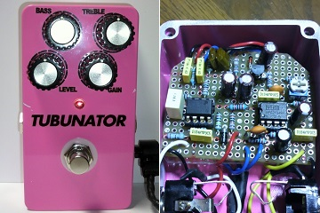
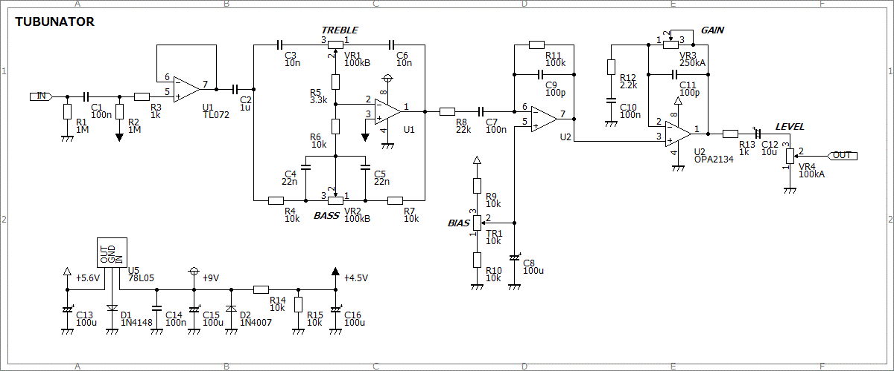
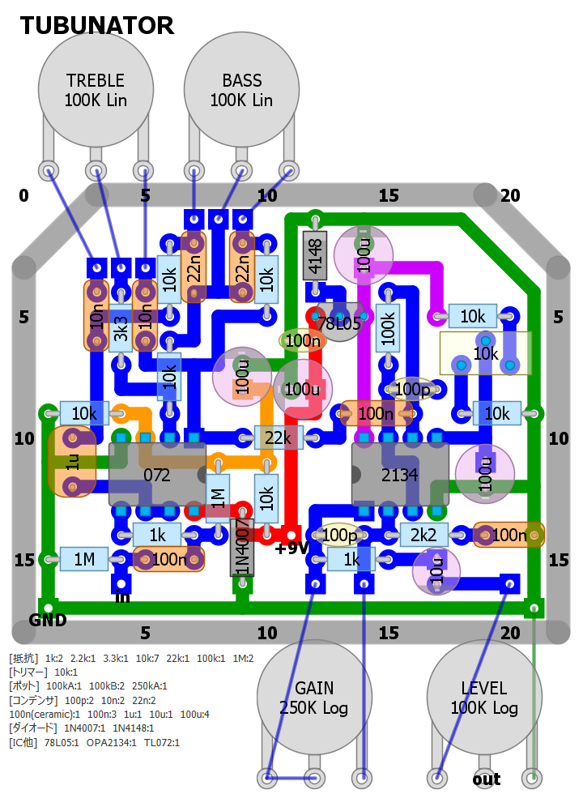
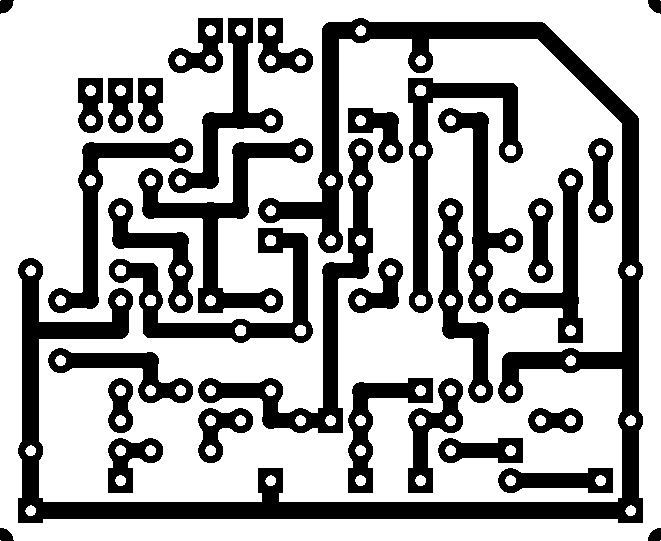

TUBUNATOR
2014年10月01日 カテゴリー：自作エフェクター（アナログ）

オペアンプで歪ませたエフェクターが実は一番偶数次倍音が出るのではないかと思い製作してみました。ケースは以前作ったPINK LLAMAのものを流用しています。有名なピンク色のエフェクター、ARION TUBULATORをもじってTUBUNATORと名づけました。
▽回路図

PINK LLAMAの歪みの部分を変えただけです。歪みやすいように5.6Vに電圧を落としていますので、使えるオペアンプは限られてきます。たぶんFETを使ったICがいいだろうということでOPA2134を使用しました。バイアス電圧を変更できるようにトリマーをつけましたが、結局真ん中がいいかなと思ったので、あまり意味ないです。
▽レイアウト

▽PCB（横55.9mm縦45.7mm）

音を聞いた感じでは、なんとなく真空管の荒々しさが出ているような気がしています。いろいろオペアンプを変更して波形・倍音を測定してみたいと思います。
（2016年11月9日部品リスト・PCB追加）